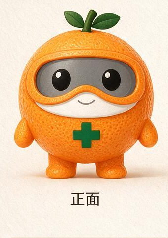

请先完成体质问卷
体质仅用于饮食养生方向的粗略区分，不构成体质辨识或医学诊断。
中医九种体质问卷
问卷是健康筛查工具，不构成医学诊断。请按近一年的通常情况回答。
结果保存在本机浏览器，换设备／换浏览器／清缓存后需重新测。
结果保存在本机浏览器，换设备／换浏览器／清缓存后需重新测。
近期饮食记录与 7 天汇总
记录只保存在当前浏览器，不上传到服务器。
茶小助连续对话
联网对话通过本机服务使用现有数据和规则，不调用外部模型 API。
小助思考中

体质药物调理资料（只读参考）
安全边界
此处只展示指南资料摘要，不提供剂量，不进入茶饮推荐，也不构成用药建议。具体用药必须由执业医师辨证决定。
此处只展示指南资料摘要，不提供剂量，不进入茶饮推荐，也不构成用药建议。具体用药必须由执业医师辨证决定。